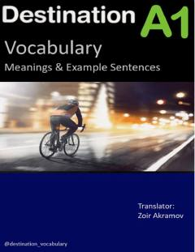

DADestination A1 darsligi uchun o'zbek tilidagi lug'at va namunaviy gaplar to'plami.
Ushbu qo'llanma Malcolm Mann va Steve Taylore-Knowles tomonidan yozilgan Destination A1 darsligidagi lug'at qismlarining o'zbek tilidagi tarjimalarini o'z ichiga oladi. Kitobda har bir so'z uchun namunaviy gaplar va ularning tarjimalari keltirilgan bo'lib, til o'rganuvchilarga so'zlarni amaliyotda qo'llash ko'nikmasini rivojlantirishga yordam beradi.